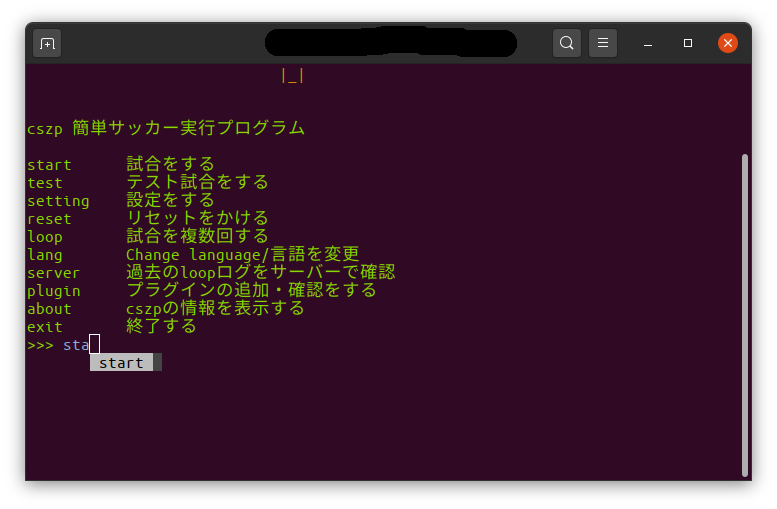

使い方¶
cszpはコマンドラインと同じ対話式のシステムを導入しています。以下の画像の通り、選択等をしていくだけでプログラムを実行することができます。そして、マウスや矢印キーでの操作ができる部分もあります。

menu画面のコマンドの説明¶
| コマンド | 説明 |
|---|---|
| start | rcssserverの実行をします。事前に必要な引数は大抵はこのあとも説明する質問により自動入力されます。 |
| test | startコマンドと似ているが、これはプログラムが実行可能か、または実行できるかを確認できるように作られています。試合時間が200tickに設定されています。 こちらも後ほど説明します。 |
| setting | cszpの設定をします。詳しくは後ほど説明します。 |
| reset | 設定ファイルが破損したりして起動できなくなった場合、このコマンドを使い設定を初期化します。復元はできません。 |
| loop | rcssserverを指定した回数実行し、結果を設定した場合、csvファイルに保存してくれるスグレモノ。synchモードの実行も設定すれば可能です。後ほど、説明します。 |
| lang | 言語を変更します。いま対応している言語は、日本語と英語です。 |
| server | 過去に試合したデータを確認することができます。後ほど説明します。 |
| plugin | プラグイン情報を表示・インストールをすることができます。こちらも後ほど説明します。 |
| about | cszp・PCの情報・インストールが確認できます。後ほど解説します。 |
| exit | プログラムを終了します。Ctrl+Cで終了することも可能です（実行中にやると不具合が発生する可能性あり） |
重要
今回、cszp ver5.0.0から新しい機能として、『rrt』コマンドが追加されました。これは、選手を総当たり戦させるシステムです。
コマンドの説明はこのようになっています。